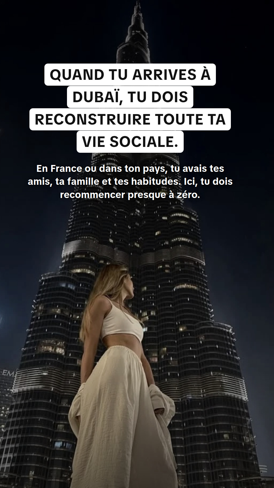
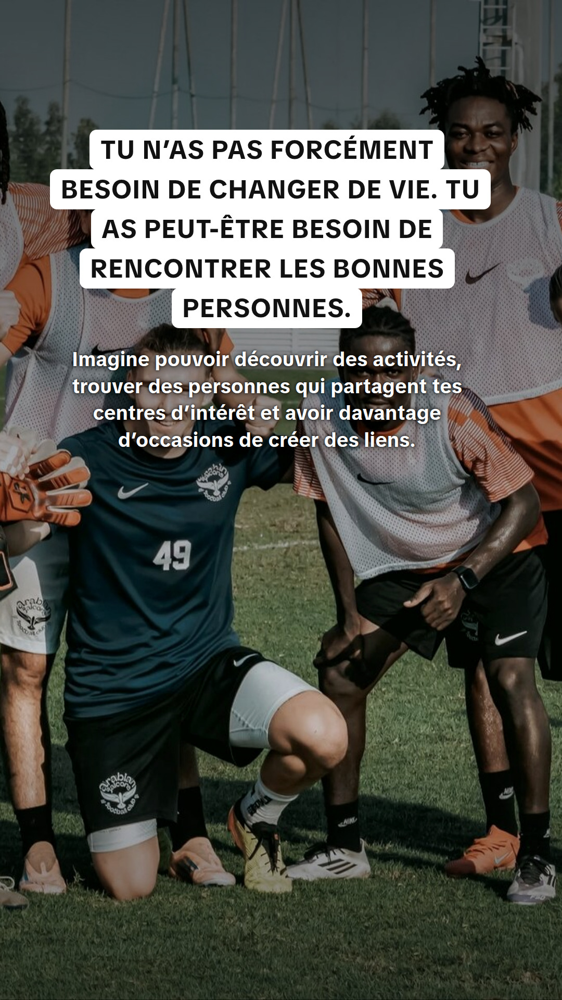

<title>Slides TikTok IRLY</title>
<meta name="claude:viewport-fit-sides" content="cover">
<style>
/* Une colonne de slides plein format, à enregistrer une par une depuis le téléphone. */
:root { --bg: #f4f3f6; --fg: #17161b; --muted: #5d5a66; --card: #ffffff; --line: #dcd9e2; --accent: #fe2c55; }
@media (prefers-color-scheme: dark) { :root:not([data-theme="light"]) { --bg: #0d0c10; --fg: #f2f1f5; --muted: #a29fab; --card: #18171d; --line: #2c2a33; --accent: #ff4d6d; color-scheme: dark } }
:root[data-theme="dark"] { --bg: #0d0c10; --fg: #f2f1f5; --muted: #a29fab; --card: #18171d; --line: #2c2a33; --accent: #ff4d6d; color-scheme: dark }
body { background: var(--bg); color: var(--fg); font: 16px/1.5 -apple-system, "Segoe UI", Roboto, sans-serif; padding-left: max(16px, env(safe-area-inset-left, 0px)); padding-right: max(16px, env(safe-area-inset-right, 0px)); padding-block: 24px 48px }
main { max-width: 520px; margin: 0 auto; display: flex; flex-direction: column; gap: 28px }
h1 { font-size: 24px; line-height: 1.2; margin: 0; text-wrap: balance }
.how { margin: 8px 0 0; color: var(--muted) }
.how b { color: var(--fg) }
figure { margin: 0; display: flex; flex-direction: column; gap: 8px }
figcaption { font-size: 14px; font-weight: 700; letter-spacing: .04em; text-transform: uppercase; color: var(--muted); font-variant-numeric: tabular-nums }
figcaption span { color: var(--accent) }
img { display: block; width: 100%; max-width: 100%; aspect-ratio: 9 / 16; border-radius: 14px; border: 1px solid var(--line); background: var(--card) }
</style>
<main>
  <header>
    <h1>Tu vis à Dubaï… mais tu te sens seul&nbsp;? — 10 slides TikTok</h1>
    <p class="how">Sur ton téléphone : <b>appuie longuement sur une image</b>, puis <b>Enregistrer dans Photos</b>. Fais-le pour les 10, dans l’ordre.</p>
  </header>
  <figure><figcaption><span>01</span> / 10</figcaption></figure>
  <figure><figcaption><span>02</span> / 10</figcaption></figure>
  <figure><figcaption><span>03</span> / 10</figcaption></figure>
  <figure><figcaption><span>04</span> / 10</figcaption></figure>
  <figure><figcaption><span>05</span> / 10</figcaption></figure>
  <figure><figcaption><span>06</span> / 10</figcaption></figure>
  <figure><figcaption><span>07</span> / 10</figcaption></figure>
  <figure><figcaption><span>08</span> / 10</figcaption></figure>
  <figure><figcaption><span>09</span> / 10</figcaption></figure>
  <figure><figcaption><span>10</span> / 10</figcaption></figure>
</main>
